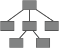
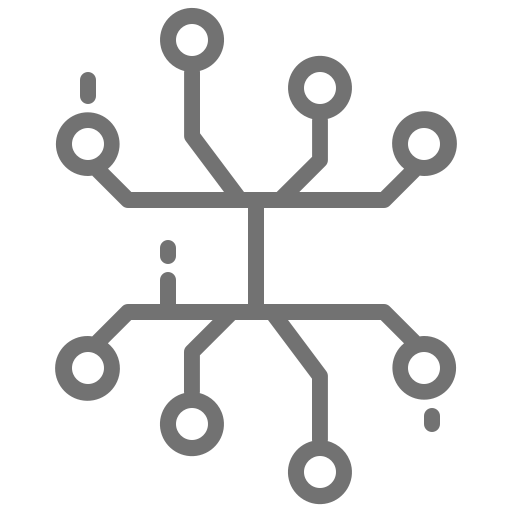
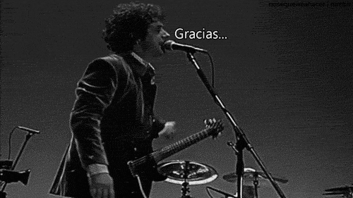

Procesamiento de lenguaje natural
Trabajar datos no estructurados

Clasificación de texto
Deteccion de idiomas
Sistemas de traduccion
Sistemas Preguntas y respuestas
Segmentacion de palabras
Resumen automático
Reconocimiento de entidades
Generacion de texto
Analisis de sentimiento
Inferencia de topicos
Datos estructurados
Arreglos
Arboles

Grafos

Datos no estructurado
Audio

Videos
Texto libre
Texto libre
- Comentarios
- Post en redes sociales
- Correos electronicos y Chats
- Documentos de texto
- Logs de aplicaciones
- Datos de sensores
Librerias en python
NLTK
Gensim
Polyglot
Spacy
Spacy
- Tokenizacion
- Stemming y Lemmatización
- Part-Of-Speech
Tokenizacion
The road to creativity passes so close to the madhouse and often detours or ends there
The road to creativity passes so close to the madhouse and often detours or ends there
The road to creativity passes so close to the madhouse and often detours or ends there
The road to creativity passes so close to the madhouse and often detours or ends there
The road to creativity passes so close to the madhouse and often detours or ends there
The road to creativity passes so close to the madhouse and often detours or ends there
The road to creativity passes so close to the madhouse and often detours or ends there
The road to creativity passes so close to the madhouse and often detours or ends there
The road to creativity passes so close to the madhouse and often detours or ends there
The road to creativity passes so close to the madhouse and often detours or ends there
The road to creativity passes so close to the madhouse and often detours or ends there
The road to creativity passes so close to the madhouse and often detours or ends there
The road to creativity passes so close to the madhouse and often detours or ends there
The road to creativity passes so close to the madhouse and often detours or ends there
The road to creativity passes so close to the madhouse and often detours or ends there
The road to creativity passes so close to the madhouse and often detours or ends there
The road to creativity passes so close to the madhouse and often detours or ends there
Tokenizacion
Problemas usuales
- Eleccion de mas de un token puede llevar a casos extraños (Object-c)
- Eleccion de espacio no es util fuera de idiomas indo-europeos (عشوائي)
- Palabras contracciones en ingles como (don't, won't)
Stemming
Escribiendo
Escribiendo
Escrib
Escrito
Escrito
Escri
Stemming
Encontrar automaticamente la raiz de un token, a traves de reglas deterministicas
Lemmatización
Escribiendo
Escribir
Lemmatización
Encontrar automaticamente la raiz de un token, a traves de metodos linguisticos como Part of speech.
Part-Of-Speech

Gracias totales

Slides creadas con revealjs